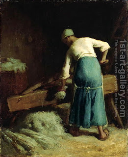

Shabbat 18 - Vessels working on Shabbat
When one makes ink by pouring water onto dye, this must be done sufficiently early before Shabbat, so that the ink becomes completely soaked before sundown - these are the words of Beit Shammai, but Beit Hillel permit it. In the same way, when putting bundles of flax into an oven to be bleached by the heat, one must give it sufficient time for bundles to become heated while it is yet day - again, these are the words of Beit Shammai, and Beit Hillel allow it.
Incidentally, when one makes dough by pouring water onto flour, Rabbi Yehudah the Prince says that this is already considered kneading, while Rabbi Yose opines that "kneading" is only when one kneads the dough manually. Could it be that the rule above belongs to Rabbi Yehudah alone? - No, Rabbi Yose could agree about ink, because it is normal to knead dough, but not ink.
From where do Beit Shammai take the concept that one's vessels and machines should rest on Shabbat? - from the Torah phrase " Be very careful to keep everything I have said to you ." It follows the prohibition of work on Shabbat and adds an additional prohibition. And Beit Hillel? They say that this prohibition is not from the Torah. They do agree, however, that when a working machine makes noise and gives an appearance of working on Shabbat - such as an automatic mill - that it should not be used.
Art: Jean-Francois Millet - Breaking Flax